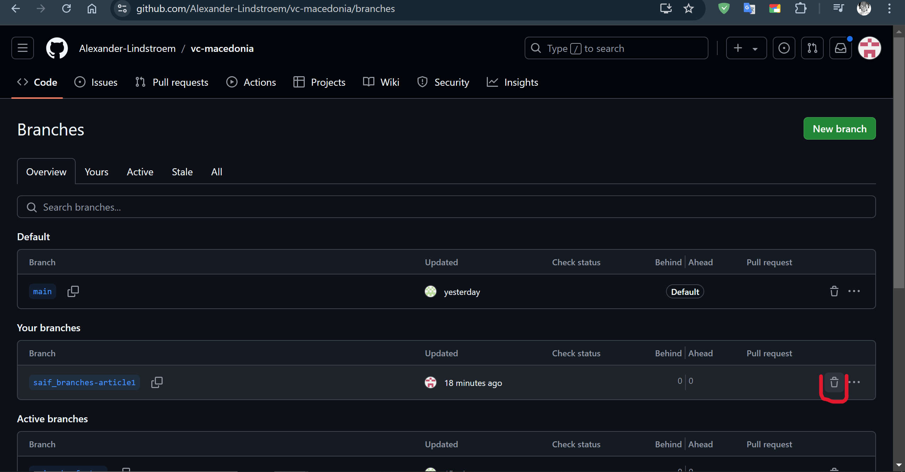
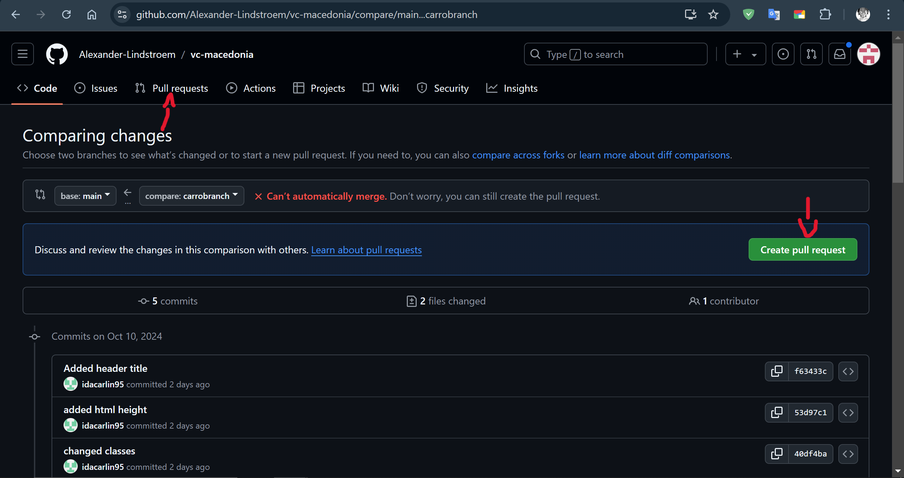

Firstly, to create and switch branches in Git, first ensure that you are in the main branch by typing "git checkout main" in your command line interface (terminal). To create a new branch, use the command "git checkout -b [name of your branch]". This will create a new branch and automatically switch to it. To switch between existing branches, use the command "git checkout [branch-name]". This allows you to move back and forth between different branches within your repository. It is important to keep track of which branch you are currently working on to avoid any confusion or conflicts with your code changes. By effectively managing branches in Git, you can work on multiple features simultaneously without affecting the main repo, allowing for greater collaboration and flexibility within the team. Lastly, if you want to delete or rather hide a branch in Github, got to Repository > Branches > Press on the garbage can.

To merge your branches with main in Git, first ensure that you are on the main branch by using the command "git checkout main" then use "git pull". Next, use the command "git merge main" to merge the desired branch into the main branch. Resolve any conflicts that you may find during the merge process by editing the conflicting files, then use "git add ." and then use "git commit -m (you type your message here). Once the merge is successful, push the changes to your remote repository using "git push origin main". To make a pull request on GitHub, navigate to your repository and click on the " pull request" button then select "new". Select the branches you would like to compare, write a detailed title for your pull request, then submit it for review. This will notify collaborators and team members of your changes and allow them to review and approve the merge before merging it into the main branch.
